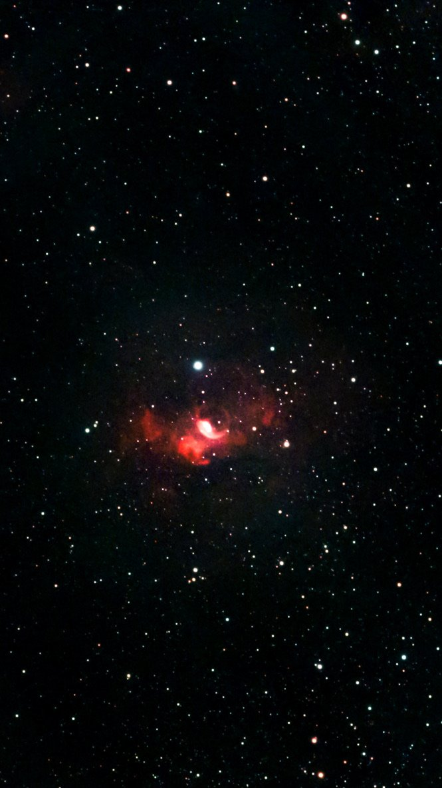

Step 10 of 10 · NGC 7635 · Night of Sep 11
How did your settings do?
Final picturesStacks (measured)
Seestar
Seestar's automatic stack, then edited in Lightroom iOS

SourceJPEG from Photos real
EditedYes, Lightroom iOSSize665 × 1182 (reduced copy)
No measurements for this side. An edited JPEG has been stretched and reshaped by hand, so star size or noise measured from it
wouldn't be fair. To compare measured stacks, add the Seestar's own stacked FITS file (it's on the Seestar, in the target's folder).
Your Siril stack
Stacked with your settings. Shown here with the app's standard preview stretch

Frames used654 of 1,015 real
Total exposure1 h 49 mStar size (FWHM)2.25 px median per frame
Background noise— method in spec
Not your final picture yet. You finished this in Lightroom. Add the exported image to see final against final.
Why two modes: Final pictures is a fair look at the end results, but taste and editing differ, so it shows no numbers. Stacks (measured) compares the two unedited stacks with the same stretch, plus frames, exposure time, star size and noise, each labelled with how it was measured. There's no "winner" score.